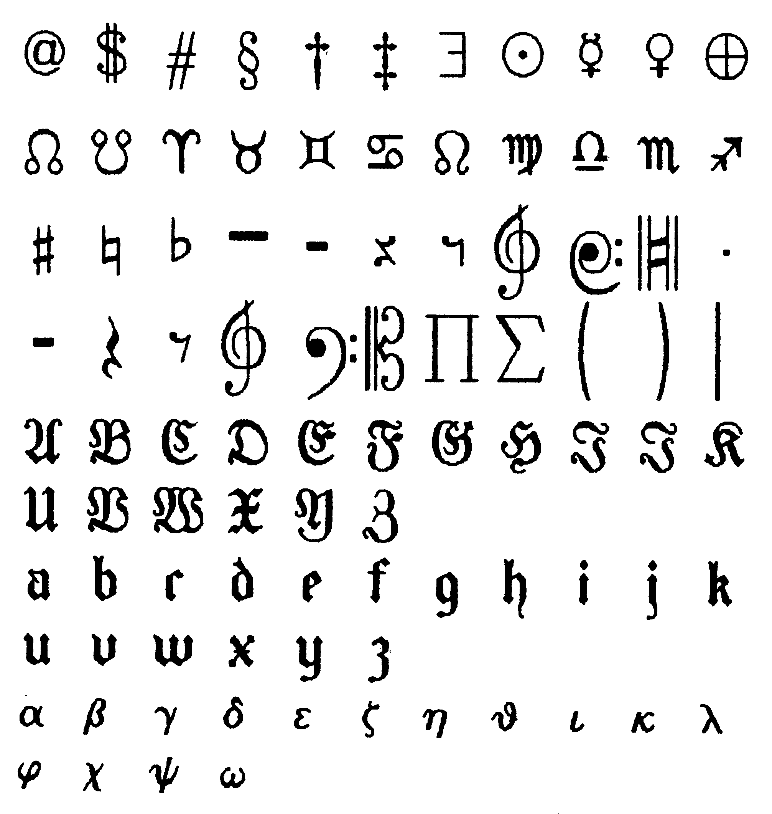
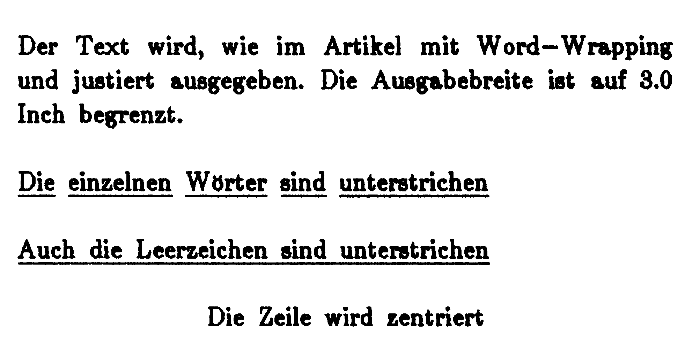
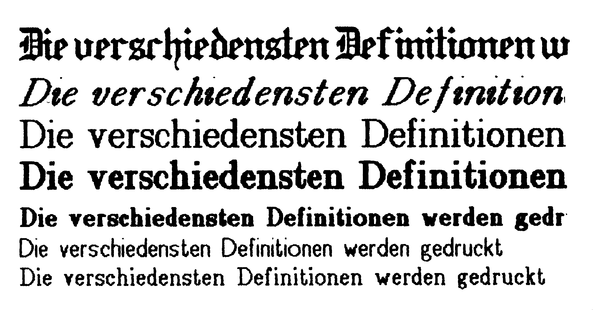

Fancy Font — Individuell drucken unter CP/M
Verleihen Sie Ihrer Korrespondenz einen persönlichen Anstrich. Fancy Font hilft Ihnen bei der Erstellung Ihres Zeichensatzes, der dann in verschiedensten Formen auf dem Drucker erscheint. Fancy Font ist ein weiterer Beweis fur das breite Anwendungsspektrum des CP/M-Betriebssystems.
Bisher kannte der CP/M-Anwender auf dem C 128 meist nur die "klassische" Software, wie zum Beispiel dBase, Multiplan und Wordstar. Durch Fancy Font werden diese Programme zusätzlich aufgewertet. Mit dieser Software können alle ASCII-Dateien, wie sie auch von Wordstar erstellt werden, in den verschiedensten Schriftformen ausgedruckt werden. Der Clou: Sie können sich mit den verschiedenen Komponenten von Fancy Font selbst Zeichensätze erstellen.
Zeichendefinition per Editor
Zur Erstellung von Zeichensätzen bietet Fancy Font zwei Möglichkeiten. Entweder Sie definieren jedes Zeichen einzeln oder aber Sie wählen einfach aus einer umfangreichen Zeichenbibliothek die entsprechenden Zeichen aus. Sehen wir uns zunächst die erste Form der Definition näher an. Dazu wird lediglich ein Texteditor, wie der ED, oder eine Textverarbeitung wie Wordstar verwendet. Wichtig ist nur, daß der Editor auf jeden Fall ASCII-Dateien ablegen muß. Wie können nun in einem normalen Textverarbeitungsprogramm beliebige Zeichensätze erstellt werden? Natürlich erstellen Sie nicht die endgültige Form eines Zeichens, sondern nur das von Fancy Font benötigte Rohgerüst. Sie "modellieren" einen Buchstaben mit Hilfe von Sternchen (<*>), die das ungefähre Aussehen des Zeichens wiedergeben. Zusätzlich muß noch die Codierung für die Größe des Buchstabens angegeben werden. Dabei wird von einer ganz einfachen Punktberechnung ausgegangen. Ein Zeichen besteht normalerweise aus 27 Punkten, was die spätere Punktmatrix in der Höhe beeinflußt. Ja, Sie haben richtig gelesen, die Höhe der Druckmatrix liegt normalerweise bei 27 Punkten. Wie ist das möglich, wo doch beispielsweise der Epson FX-85 nur mit neun Nadeln arbeitet? Nun, wie gesagt, bei dem editierten Zeichen handelt es sich nur um ein Gerüst.
Drucken mit Spezialeffekten
Wenn die ersten Probedrucke auf dem Drucker erscheinen, läßt sich sehr schnell feststellen, wie Fancy Font den Drucker ansteuert. Die von uns getestete Epson FX-Version bringt den Zeichensatz über hochauflösende Grafik auf das Papier. Daher geht der Ausdruck auch nicht sonderlich schnell vonstatten. Das Resultat entschädigt aber dann wieder für das Warten auf das fertige Dokument. Der Ausdruck ist so professionell, daß beinahe nicht mehr zu erkennen ist, daß hinter dem Ganzen ein Matrixdrucker steckt. Wenden wir uns nun der zweiten Möglichkeit zu, einen Zeichensatz zu erstellen. Wie bereits erwähnt, legt Fancy Font eine umfangreiche Zeichenbibliothek bei. Mit dem Fancy Font-Programm "CFONT" können einzelne Bestandteile aus dieser Bibliothek für eigene Zeichensätze verwendet werden. Dazu wird nur die Nummer des entsprechenden C 128-ASCII-Zeichens angegeben und danach die entsprechenden Zeichen aus der Fancy Font-Datei. Diese Zeichen sind ebenfalls durch Nummern gekennzeichnet. Bis zu 127 Zeichen lassen sich in einem Font zusammenfassen. Beim Ausdruck wird dann "nur" noch der in der Textdatei enthaltene Code mit dem im Font definierten Zeichen vertauscht und ausgedruckt. In Bild 1 sehen Sie einen kleinen Auszug der Fancy Font-Zeichenbibliothek. Sie sehen, daß nicht nur Buchstaben verändert werden können, sondern auch beliebige Sonderzeichen, deren Größe wiederum von der Definition abhängig ist. Natürlich stellt die Arbeit mit der Bibliothek den bequemeren Weg dar, um zum eigenen Zeichensatz zu kommen.

Doch auch die Möglichkeiten dieser Lösung werden nach einiger Zeit erschöpft sein und die Zeichensätze auf etwas mühsamere Weise über die Textverarbeitung erstellt. Um nun einen individuellen Zeichensatz zu erstellen, müssen als erstes, wie bereits angesprochen, die einzelnen Zeichen mit einer Textverarbeitung oder einem Editor erstellt werden. Danach tritt das Editierprogramm "EFONT" in Aktion, das sich sehr bald als unverzichtbarer Bestandteil des Softwarepakets Fancy Font entpuppt. Mit "EFONT" werden nämlich die endgültigen Zeichensätze generiert, die Sie individuell erstellt haben. Dazu wird einfach ein beliebiger, bereits vorhandener Font eingeladen und die Zeichen mit ihren Codes ersetzt durch die von Ihnen definierten Buchstaben. Auf diese Art lassen sich nicht nur eigene Codes erstellen, sondern auch bereits vorhandene oder aus der Bibliothek erstellte verändern. Dazu ist die "EFONT"-Anweisung "edit" nötig. Dieses Kommando setzt die gewünschten Zeichen in Dateien um, die dann mit der Textverarbeitung bearbeitet werden. "EFONT" erstellt dabei eine Datei, die die bereits bekannten Sternchen enthält. Dies ist auf jeden Fall notwendig, da weder die Zeichenbibliothek noch die bereits mitgelieferten Fonts Umlaute und deutsche Sonderzeichen enthalten. Diese können so leicht implementiert werden.
Drucken mit Stil
Lassen Sie sich nun in die Vielfältigkeit des eigentlichen Druckprogramms "PFONT" entführen. Damit werden die Texte nicht nur einfach ausgedruckt, im gewählten Zeichensatz versteht sich, es ist auch eine Manipulation der Druckausgabe über die verwendete Textdatei möglich. "PFONT" weist mehr exzellente Fähigkeiten auf, als beispielsweise Wordstar zur Manipulation von Texten bietet. Der Schlüssel für die Vielfältigkeit liegt in einem Kommandoparameter verborgen, der "PFONT" mitteilt, daß ein Befehl folgt. Auf diese Weise lassen sich komfortable Sequenzen in den Text einbauen, mit denen Sie das Aussehen des gedruckten Textes beeinflußen können. Die Möglichkeit, verschiedene Zeichensätze während des Ausdrucks zu verwenden, zählt zweifellos zu den stärksten Kommandos. So können Sie über einen "PFONT"-Befehl jederzeit einen speziellen Zeichensatz, beispielsweise für wichtige Absätze und Zwischenüberschriften anwählen. Allerdings müssen die verschiedenen Font-Dateien dann beim Aufruf des Programms mit angegeben werden. Bei der Angabe des Kommandoparameters taucht allerdings ein kleines Problem auf, das sich allerdings durch den Komfort, den Fancy Font bietet, leicht beheben läßt. Ein deutscher Zeichensatz hat die hier etwas nachteilige Eigenschaft, über Umlaute zu verfügen. Diese müssen vom Anwender auch für die mitgelieferten Fonts erst definiert werden. Mit dem Editierprogramm "EFONT" ist dies ohne weiteres möglich. Definieren Sie ein "Ö" erhält dies den ASCII-Wert 92. Im amerikanischen Zeichensatz steht an dieser Stelle aber der Backslash. Dieser wird von "PFONT" normalerweise als Kommandoparameter verwendet. Im Normalzustand würde also "PFONT" das "Ö" und die nachfolgenden Anweisung als Befehl interpretieren. Hier kommt dem Benutzer allerdings die komfortable Handhabung des Programms zugute. Im Normalfall wird das Druckprogramm folgendermaßen aufgerufen:
pfont test.txt +fo romn12 romn10Bei diesem Aufruf wird die Datei "test.txt" mit den beiden Zeichensätzen "romn12" und "romn10" ausgedruckt. Sobald "PFONT" auf ein "Ö" stößt, wird ein Fehler ausgegeben, da die nachfolgenden Zeichen in der Regel nicht als Befehl interpretiert werden können. Um hier Abhilfe zu schaffen, rufen Sie das Druckprogramm folgendermaßen auf:
pfontDanach steht ein komfortables Hilfsmenü zur Verfügung, das dem Anwender viele Möglichkeiten zum Eingreifen bietet. So kann der Kommandoparameter geändert werden, das geschilderte Problem ist somit auf einfache Weise aus der Welt geschafft. Des weiteren können alle Register einer modernen Textverarbeitung gezogen werden. Die zu druckenden Textdateien werden zusammen mit den zu verwendenden Zeichensätzen eingegeben. Danach können noch Kopf- und Fußzeilen definiert werden. Natürlich bietet "PFONT" noch einiges mehr. So können, wie man es auch von einer guten Textverarbeitung erwarten kann, Textdateien verkettet werden. Sie geben mehrere Dateinamen an, die dann nach dem Setzen des betreffenden Parameters wie eine einzelne Datei ausgegeben werden. Insgesamt können bis zu 15 Dateien in einem Druckvorgang ausgegeben werden. Sogar der Abstand der Fuß- und Kopfzeile vom Seitenanfang oder -ende kann manipuliert werden. Was die Zeichensätze betrifft, so können ebenfalls bis zu 15 Stück in einem Dokument Verwendung finden. Daß man Seitennummern mit ausdrucken kann, erscheint schon fast selbstverständlich. Der Ausdruck kann per Definition bei jeder beliebigen Seitennummer angehalten werden. Des weiteren ermöglicht Fancy Font das Anfertigen von mehreren Kopien pro Datei, maximal 9999 Stück. Ein weiterer, sehr wichtiger Bestandteil, ist die Einstellbarkeit der Schriftqualität. Es dauert eine ganze Weile, bis ein Text in der Standardeinstellung in hochauflösender Grafik ausgedruckt ist. Um diesem Manko abzuhelfen, können verschiedene Auflösungsstufen angewählt werden. Zwar ist dann die Schriftqualität vermindert, dafür wird der Druckvorgang um einiges beschleunigt. Um den Druckvorgang besser kontrollieren zu können, bietet "PFONT" die zusätzliche Ausgabe auf Bildschirm an. Dies ist vor allem nützlich, wenn bei großen Zeichen die Zeilenlänge versehentlich überschritten wird. Man sieht auf einen Blick, wo der Fehler zu suchen ist. Damit wären wir bei einem kleinen Problem von Fancy Font angelangt. Wenn Sie einen Zeichensatz mit überdimensional großen Zeichen definiert haben, müssen Sie unbedingt darauf achten, nicht mehr Buchstaben in eine Textzeile zu schreiben, als für diese Schrift in einer Druckzeile Platz haben. Fancy Font ist leider nicht ohne weiteres in der Lage, Wörter, die nicht mehr in die aktuelle Zeile passen, in die nächste Zeile zu übernehmen. Ein kleines Manko, dem aber durch Beachten der maximal für den Zeichensatz möglichen Zeichenlänge leicht abgeholfen werden kann.
Nachdem Sie nun einiges über die Möglichkeiten erfahren haben, mit denen der Ausdruck extern beeinflußt werden kann, sehen wir uns jetzt die verschiedenen Kommandos an, die in den Text eingebunden werden. Am wichtigsten ist wohl eine Sequenz, die es erlaubt, mehrere Zeichensätze im Text zu verwenden. Das Problem der überlangen Zeilen kann nun ebenfalls gelöst werden, indem ein automatisches "Word-wrapping" eingeschaltet wird. Damit werden Wörter, die nicht mehr in die gedruckte Zeile passen, automatisch in die nächste gezogen. Mit den verschiedenen Kommandoparametern lassen sich alle Register der Textverarbeitungsfähigkeiten von Fancy Font ziehen. So können Sie Text zentrieren, die Auflösung verändern oder in Blocksatz drucken. Vor der Beschreibung des nächsten Kommandos halten Sie sich besser fest, denn es stellt eine kleine Sensation in Sachen Textverarbeitung dar. Fancy Font ermöglicht es, den Drucker auf die "Reise" zu schicken. Sie können ohne weiteres innerhalb einer Zeile vor- und rückwärts positionieren, um spezielle grafische Effekte zu erzielen. Natürlich können Sie mit Fancy Font auch spaltenweise drucken. Zwei oder mehr Spalten lassen sich mit Hilfe der textinternen Kommandos drucken. Dabei müssen Sie wieder auf die verwendete Schriftgröße achten. Um den Spaltendruck zu verwirklichen verwendet Fancy Font eine außergewöhnliche Methode: Die erste Zeile der ersten Spalte wird markiert und die Spaltenbreite definiert. Wenn die zweite Spalte gedruckt werden soll, veranlaßt ein spezielles Kommando das Zurückdrehen des Papiers bis zur Anfangszeile der Spalte. Dann erst wird die zweite Spalte gedruckt. Auf diese Weise können Sie auch während des normalen Druckvorgangs eine rückwärtige Position auf dem Papier anspringen und dort weiterdrucken. Daß sich jederzeit ein Seitenvorschub einbauen läßt, versteht sich von selbst. Weitere Gestaltungsmöglichkeiten haben Sie durch das Festlegen von freidefinierbaren Tabulatoren. Um Textpassagen zu unterstreichen bietet Fancy Font zwei Methoden an. Zum einen werden nur ganze Wörter unterstrichen, zum anderen auch die enthaltenen Leerschritte. Über einen weiteren Parameter können bestimmte Textteile auch revers gedruckt werden, was sich aber nur bei großen Zeichen anbietet, die mit doppeltem Zeilenabstand arbeiten, da ansonsten die vorhergehende und nachstehende Zeile teilweise überschrieben werden. Für Anwender mit ausgeprägtem Dokumentationssinn läßt sich Text im Text "verstecken". Dieser versteckte Teil dient dann nur als Dokumentation und wird nicht mit ausgegeben. Damit Sie sich ein Bild von der Leistungsfähigkeit dieser internen Kommandos machen können, sehen Sie in Bild 2 einmal den mit Wordstar geschriebenen Text und darunter den Fancy Font Ausdruck. Um Ihnen zu demonstrieren, wie Vielfältig die Zeichensätze von Fancy Font ausfallen können, sehen Sie in Bild 3 eine ganze Reihe verschiedener Definitionen versammelt. Es sei noch darauf hingewiesen, daß dieser Artikel komplett mit Fancy Font geschrieben ist.


Wer hätte so etwas im CP/M-Modus des C 128 erwartet? Auch wir waren überrascht von der Leistungsfähigkeit dieses Programms. Was die Freude etwas trübt ist der relativ hohe Preis des Produkts. Fancy Font kostet inklusive Handbuch 760,07 Mark.
Trotzdem eignet sich diese Software optimal als Zusatz zu Wordstar und bereichert darüber hinaus das CP/M-Betriebssystem um Eigenschaften, die bisher für fast unmöglich gehalten wurden. Auch wenn Ihnen der Preis für das Produkt zu hoch erscheint, sollten Sie jetzt von der Professionalität von CP/M überzeugt sein. In Anbetracht der Tatsache, daß der Umsatz für CP/M-Produkte weiter zurückgeht, bleibt zu hoffen, daß auch Programme wie Fancy Font im Preis fallen werden.
(rf)Bezugsquelle: BSB Thomas Krug, Weissenburgstr. 49 8400 Regensburg